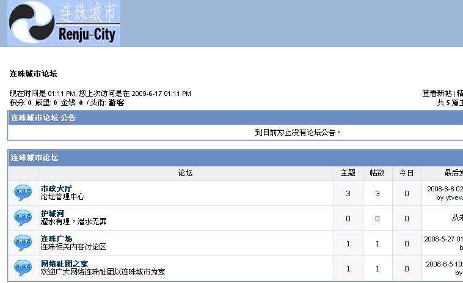

连珠城市进行商业化运作的一些设想
#1 连珠城市进行商业化运作的一些设想作者：沈毅 发表时间：2009-6-18 9:13:16
经过将近三年的技术探索和积累，目前的连珠城市已经有了比较漂亮的界面，但是在功能上还有待加强和完善。最近，我有了将其作为自己近年内主要工作的想法，希望能做成一个真正能为中国连珠爱好者服务的平台。
然而，目前自己的经济能力十分有限；很希望能有朋友给予支持并共同参与这个平台的建设。各位有什么建议都可以在此回帖，有合作意向的可以给我留言。
#2 Re:连珠城市进行商业化运作的一些设想作者：越狱行辕 发表时间：2009-6-18 9:14:35
连珠城市是什么？#3 Re:连珠城市进行商业化运作的一些设想作者：小九多一点 发表时间：2009-6-18 9:15:01
一个五子棋的社区。。。#4 Re:连珠城市进行商业化运作的一些设想作者：王小 发表时间：2009-6-18 9:56:31
同学 你想想 别个是你，看到你们那个社区，其实啥都没有，会投资么？现在经济危机哦。
还做了三年，不容易啊。不过楼主的精神还是好的！！！ 呵呵
#5 Re:Re:连珠城市进行商业化运作的一些设想作者：沈毅 发表时间：2009-6-18 10:44:53
引用：
原文由 王小 发表于 2009-6-18 9:56:31 :同学 你想想 别个是你，看到你们那个社区，其实啥都没有，会投资么？现在经济危机哦。
还做了三年，不容易啊。不过楼主的精神还是好的！！！ 呵呵
我不知道你的什么都没有是什么意思。
08年改版的时候我已经完成了在线对弈和在线拆棋的功能，还直播了今年的上海名人赛。请不要到处炫耀你的浅薄和无知。
WWW.RENJU-CITY.COM
#6 Re:连珠城市进行商业化运作的一些设想作者：wrwak 发表时间：2009-6-18 13:13:47
确实是什么都没有
#7 Re:连珠城市进行商业化运作的一些设想作者：wrwak 发表时间：2009-6-18 13:16:58
其实爱五子棋网才是最好的商业化原型，人气够，棋谱也够多，只是主人没有这个打算。爱五子棋也有在线对弈打谱。楼主还是放弃吧。给你指条明路--说服有志青年。#8 Re:连珠城市进行商业化运作的一些设想作者：wrwak 发表时间：2009-6-18 13:21:34
五子棋下多了有瘾（也容易戒掉），尤其是接触黑石和终结者后，但是要进入这阶段时间较长，不象网游能够快速的吸引玩家，而且非常容易上瘾，之后无法自拔者居多，所以网游是游戏中的最能暴利，但是网游是黑色产业链，国家已经开始做出很多限制了，而且网游企业竞争十分激烈。五子棋的有点就是现在起步还早，谁能第一个成功商业化，前景是广大的。#9 Re:连珠城市进行商业化运作的一些设想作者：海月 发表时间：2009-6-18 13:57:50
看了一下，里面没有修改时间及规则设置，不太适合专业棋手练习，还是应该多借鉴ORC，可惜ORC服务器中国在太不稳定#10 Re:连珠城市进行商业化运作的一些设想作者：茗弈南极的绿洲 发表时间：2009-6-18 15:19:59
什么是商业化？
谁给中国五子棋的商业化埋单？
围棋的成功有什么更深层的含义吗？为什么给陈毅授围棋9段？
任何一项智力项目的成功有什么同通性吗？
接触专业五子棋的人在中国究竟有什么？连珠城市对他们收费吗？还是去用广告收入维持连珠城市运行呢？这样的模式又能坚持多久呢？连珠城市的核心竞争力究竟是什么？
五子棋可以做为你的事业吗？他可以提供你长久的经济来源吗？还是只是你业余时间的爱好，用从五子棋中获取的知识去审度做人的道理呢？将五子棋的中庸思想用于现实生活工作中呢？
#11 Re:连珠城市进行商业化运作的一些设想作者：王小 发表时间：2009-6-18 15:35:34
说老实话也会被人骂。
其实你做的很好，一定有人投资的。祝贺你们早上带领大家往前走，赞一个。
［ 茗弈小刀 于 2009-6-18 18:54:56 时花20金币送鲜花一朵］
#12 Re:连珠城市进行商业化运作的一些设想作者：有志青年 发表时间：2009-6-18 17:50:10
商业化?我不看好,所以爱五子棋网坚持所有资料免费,且不挂广告代码
沈老师有想法是好事情,毕竟不同的人有不同的思路,难保不闯出一番新天地.
现在的所谓商业化,是广告收入而已吧.其他能有的收入我还真想不出来.
#13 Re:连珠城市进行商业化运作的一些设想作者：不知 发表时间：2009-6-18 18:04:10
感觉商业化不合适..有广告就更不合适了..
#14 Re:连珠城市进行商业化运作的一些设想作者：wrwak 发表时间：2009-6-18 18:43:47
首先是五子棋交易，软件棋谱，必须要懂得人来做公证，交易收取一定中介费。在线对弈不收费但是可以带来不少流量，流量就可以去卖广告，再者可以批发廉价的棋盘和棋子等，甚至可以弄大鱼冬瓜签名啊等。商业化模式众多，这些只是网络上。论坛上很多都是慢棋战其实可以在线搞稍微快点的棋（60分钟的）；邀请名人对战等。五子棋最大的缺点还是相对其他棋大众了解太少，这点是致命的弱点。
资料免费但是很多明星地毯的资料还是有人有需要的，广告挂在合适的位置不宜太多。我的很多想法是没精力经济去实现。
#15 Re:连珠城市进行商业化运作的一些设想作者：茗弈南极的绿洲 发表时间：2009-6-18 19:21:41
软件棋谱这类最好不要形成市场，一旦出现交易，恐怕就会是棋谱价格很低很低，相同无差别的棋谱很多很多，形成泛滥之势以后，最终会毁掉五子棋，毁掉所有人开创的这一片大好形势，话放这里，让时间来验证。
#16 Re:Re:连珠城市进行商业化运作的一些设想作者：沈毅 发表时间：2009-6-18 20:12:26
引用：请你先装flash player，否则是不能正常显示其他模块的。论坛以后我是准备取消的
原文由 wrwak 发表于 2009-6-18 13:13:47 :确实是什么都没有
#17 Re:Re:连珠城市进行商业化运作的一些设想作者：沈毅 发表时间：2009-6-18 20:15:07
引用：再谢谢你一次吧，至少你去看过我的网站了
原文由 wrwak 发表于 2009-6-18 13:16:58 :
其实爱五子棋网才是最好的商业化原型，人气够，棋谱也够多，只是主人没有这个打算。爱五子棋也有在线对弈打谱。楼主还是放弃吧。给你指条明路--说服有志青年。

#18 Re:连珠城市进行商业化运作的一些设想作者：茗弈南极的绿洲 发表时间：2009-6-18 20:21:12
沈毅老师，我觉得你现在没必要去想商业化，可以组织一个志趣相投的团队，大家一起开创连珠城市，广泛征集五子棋爱好者的意见，然后做适当的改善，一步一步慢慢来，不可能一口就吃个胖子，一下子就实现商业化，何况商业化是首先需要有文化的沉淀的。只要你尽力就足够了，我们大家都会支持你的连珠城市的。
#19 Re:Re:连珠城市进行商业化运作的一些设想作者：沈毅 发表时间：2009-6-18 20:21:31
引用：
原文由 海月 发表于 2009-6-18 13:57:50 :
看了一下，里面没有修改时间及规则设置，不太适合专业棋手练习，还是应该多借鉴ORC，可惜ORC服务器中国在太不稳定
我决定放弃快棋部分，这样就没有时间设置的问题了 因为目前弄一堆服务器去和QQ火拼是找死。
因为目前弄一堆服务器去和QQ火拼是找死。
关于规则，我将支持山口规则，默认设置为两点。这样修改可以吗？
#20 Re:Re:连珠城市进行商业化运作的一些设想作者：沈毅 发表时间：2009-6-18 20:29:08
引用：
原文由 茗弈南极的绿洲 发表于 2009-6-18 20:21:12 :
沈毅老师，我觉得你现在没必要去想商业化，可以组织一个志趣相投的团队，大家一起开创连珠城市，广泛征集五子棋爱好者的意见，然后做适当的改善，一步一步慢慢来，不可能一口就吃个胖子，一下子就实现商业化，何况商业化是首先需要有文化的沉淀的。只要你尽力就足够了，我们大家都会支持你的连珠城市的。
我理解你的想法，也没有说今天想商业化，明天就去注册公司，后天就去折腾上市，再后天跳楼谢世
但迟早会有人专门来做这事情的，即使不是我不是现在，不是叫连珠城市
#21 Re:连珠城市进行商业化运作的一些设想作者：魔法少年 发表时间：2009-6-18 20:57:32
现在流行三农问题。所以俺觉得叫连珠农村不错，够绿色，赫赫。加油！~~#22 Re:连珠城市进行商业化运作的一些设想作者：茗弈南极的绿洲 发表时间：2009-6-18 21:44:10
不是什么都必须走商业化的道路，也不是说商业化是唯一的出路，很多事情应该有他个性化的模式，特有的发展进程，商业化的进程可能会害了五子棋了，五子棋如果有人想拿来做商业化的话，我觉得成功的几率很小很小，最好不要有人来做。可以尝试更多人性化的精神层面上的东西，那样会让五子棋走的更长更远，更容易取得社会的认同。“连珠文化”的教育如何和中华民族几千年来的优秀文化思想更好的结合，是五子棋目前最缺少的，顾炜老师的境界是我很欣赏的。
我和不少老棋手谈过五子棋商业化的问题，我们都觉得现在的五子棋不可能实现商业化，就五子棋单论五子棋，而缺少棋类应该有的文化延伸，这样的棋是很难被企业文化认同的，五子棋本身需要完善的地方有许多，中国五子棋需要走的路还很长很长，首先就应该去掉商业化的思想，去掉功利心的左右。去真正体会五子棋，享受五子棋，快乐五子棋。
#23 Re:Re:连珠城市进行商业化运作的一些设想作者：沈毅 发表时间：2009-6-18 21:47:45
引用：现在都在流行种菜、偷菜，我会考虑把慢棋和种菜结合起来的
原文由 魔法少年 发表于 2009-6-18 20:57:32 :
现在流行三农问题。所以俺觉得叫连珠农村不错，够绿色，赫赫。加油！~~
#24 Re:连珠城市进行商业化运作的一些设想作者：王小 发表时间：2009-6-19 11:08:31
说实在的，你去看一下 迷你围棋，你就知道什么叫商业化了。
你们做的东西真的不扎个样，虚心才能进步，你都不承认你做的东西很一般，
扎个有可能做的好。（当我又乱说好了，我以后有空了，在来做的些，你就
可以看到差距了）
#25 Re:连珠城市进行商业化运作的一些设想作者：黄药师 发表时间：2009-6-19 17:34:02
刚进去参观了一下，发现就我一个人哇～#26 Re:连珠城市进行商业化运作的一些设想作者：17号蓝星仔 发表时间：2009-6-19 23:57:57
别人不知道连珠城市 你说他无知 并且是在炫耀自己的无知 可悲 不是一个好的合作伙伴 你应该介绍连珠城市给他认识 就你那态度 我也不知道有连珠城市这家伙 人都被你骂了 看来那人是不会去参观你的所谓很美好的连珠城市的了
#27 Re:连珠城市进行商业化运作的一些设想作者：浪人痴痴 发表时间：2009-6-23 9:33:46
楼上的，貌似你很记仇啊。。
小猫。这里不是当年的月下了。兄弟我永远支持。
#28 Re:连珠城市进行商业化运作的一些设想作者：龙神 发表时间：2009-6-24 12:34:10
弟弟，哥哥来看你了，加油努力#29 Re:连珠城市进行商业化运作的一些设想作者：沈毅 发表时间：2009-6-25 23:04:55
 谢谢
谢谢